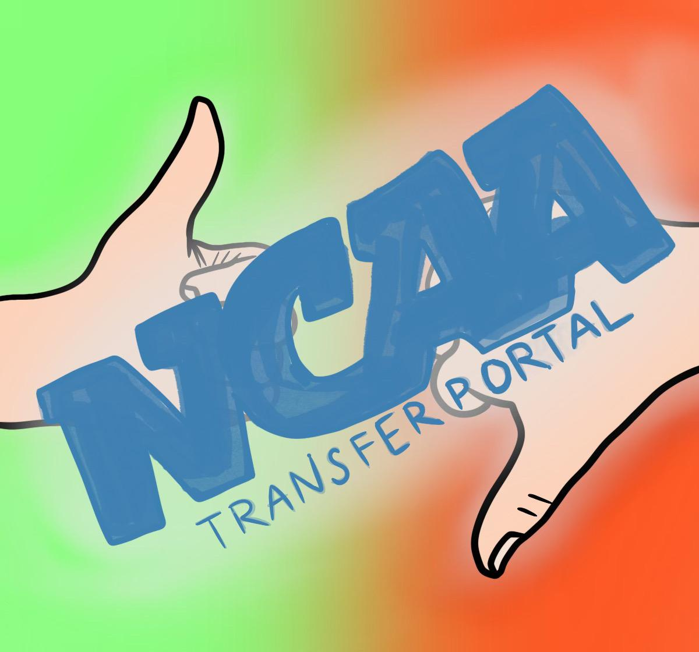
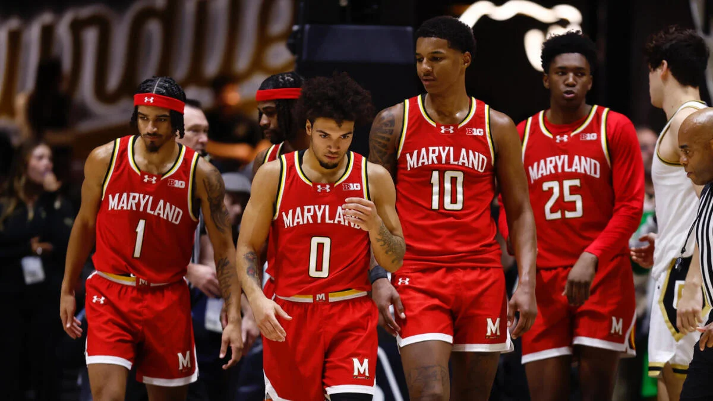

How the Men's College Basketball Transfer Portal Impacts Winning
By Jack Wynn

Credit: Pepperdine University Graphic
The transfer portal is a new and exciting opportunity for college athletes to take their talents to a program that better sets them up for success. There have been star players on bad teams who transfer to a better program where they can win. There have also been bench players on great teams who transfer to smaller programs where they have the chance to play their best.
College sports have undergone great change over the last decade as we have moved into a new era of player freedom and empowerment. In addition to the transfer portal, there have been increased opportunities pertaining to NIL deals following the Supreme Court's ruling that college athletes had the right to profit off their name and likeness. Each of these contributes to the growing consensus that college sports should be about the students, not about the big programs. Given that schools have profited off of their students for decades, it’s only right for the athletes to get their fair share.
“We have moved into a new era of player freedom and empowerment.” Jack Wynn

Credit: CBS Sports
However, player movement has escalated into a legitimate issue for programs trying to build and develop a team. Now, not only are some players leaving for the draft after one year, but many others are simply leaving for better opportunities. Some have argued that this damages the image of college sports, as fans lose out on the chance to see a team grow together.
Although teams are often losing key players, they also have the chance to bring in new star players themselves. If a team holds on to enough talent, and is able to bring in talented transfers, then the portal can be very beneficial to a school trying to improve without depending on recruiting. But how does the transfer portal impact a team’s ability to win?
Take a school like the University of Maryland. Despite their history of success in college basketball, they often undergo change both in the coaching staff and on their roster. This offseason, Maryland is tasked with replacing nearly their entire roster as they lost players to both the draft and other programs.
The graph displayed above illustrates how Maryland’s success relates to their involvement in the transfer portal. Since the portal was expanded and emphasized in 2020, the trends indicate that Maryland wins more in years they have fewer outgoing transfers and lose more in years they have a higher number of outgoing transfers.
Conversely, a school like the University of Purdue has become known for their lack of involvement in the transfer portal and preference for standard recruiting. Their success illustrates that team’s do not have to depend on the portal, contrary to popular belief. Programs are still able to develop a team and succeed at a high level.
As the transfer portal continues to evolve, teams will continue to adapt in order to win. If students are able to take advantage of the portal and put themselves in a better position for the future, then college sports can truly set them up for success.